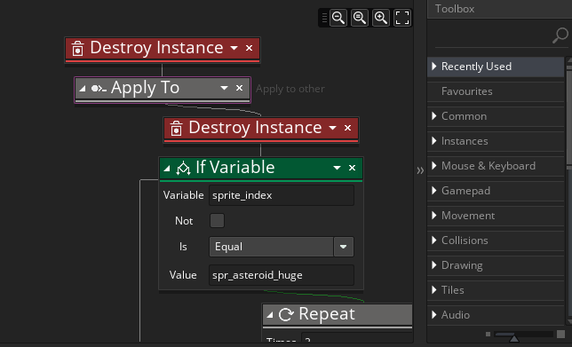

We can now look at updating the score and lives values as we play. For that, open up the object "obj_bullet" and go into the Collision Event with the object "obj_asteroid"

Since the score variable is an instance variable, if we simply add to it in this event, we will be adding to the bullet object score variable, which isn't what we want. Instead we need to add to the "obj_game" variable, as that's the object that is controlling the score and lives for us. We've seen how to do this already in this event using the Apply To... action, so we'll use that here again along with the Set Score action, like this:

Note that when we add the Set Score action we check the relative flag, as that will add the value onto the score for us.
For the lives, you need to open the player ship object "obj_ship" and go to the Collision Event with the object "obj_asteroid":
Here we're going to deduct 1 from the lives, so go ahead and add the following actions above the rest of the DnD™ in the event:
This will subtract 1 from the lives variable in the controller object.
If you test the room now you'll see the score go up when you shoot the asteroids and if the player ship collides with an asteroid the lives will go down. There's still work to be done here, but we'll come back to it later after we've set up some more rooms.
Click the "Next" button to continue...